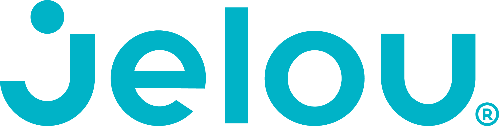

Jelou — Software Development Intern
Guayaquil, Ecuador
Colaboro en el desarrollo y mejora de funcionalidades para productos de software: frontend, integración de componentes, corrección de bugs, revisión de flujos de usuario y mantenimiento de código. He reforzado mis habilidades con TypeScript, React, Git y el trabajo colaborativo dentro de un entorno real de desarrollo.